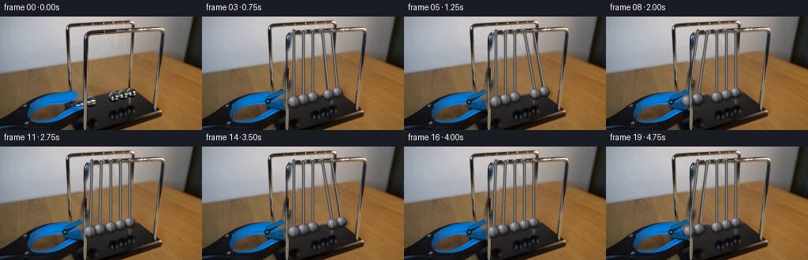
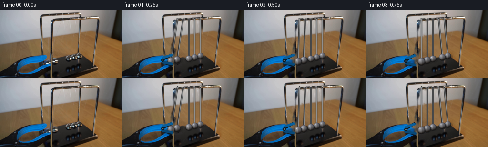

CODING AGENTS AS PIXEL WORLD MODELS
traex/GPT-5.6-Sol · 0052
点击播放 · 原生 RGB 像素
逐轮保存的候选
回放视频、检查图与代码变化。
每份候选均可单独播放。实际图片检查记录在下方工具轨迹中。
候选 01播放与检查图
点击播放 · 原生 RGB 像素


展开代码变化
--- 上一保存版本
+++ 本次保存版本
@@ -0,0 +1,204 @@
+from pathlib import Path
+import math
+import cv2
+import numpy as np
+from PIL import Image
+import artifact_io
+
+CASE_DIR = Path(__file__).resolve().parent
+W, H = 256, 144
+N, FPS = 20, 4
+
+# Five suspension points and the perspective-correct resting centers visible in the shot.
+PIVOTS = np.array([[116.0, 17.0], [128.0, 17.5], [140.0, 18.0],
+ [152.0, 18.5], [164.0, 19.0]], np.float64)
+REST = np.array([[116.0, 108.0], [128.0, 105.0], [140.0, 102.0],
+ [152.0, 99.0], [164.0, 96.0]], np.float64)
+LENGTHS = REST[:, 1] - PIVOTS[:, 1]
+RADII = np.array([7.8, 7.5, 7.2, 6.9, 6.6], np.float64)
+AMP0 = 0.195 # about eleven degrees, matching the held amplitude
+QUARTER = 0.56 # seconds, amplitude to impact
+HALF_SWING = 2.0 * QUARTER
+
+
+def pendulum_centers(t):
+ """Ideal equal-mass cradle motion with gently decaying impacts."""
+ theta = np.zeros(5, np.float64)
+ if t < QUARTER:
+ # The two balls held at the left have just been released.
+ a = AMP0 * math.exp(-0.018 * t)
+ th = -a * math.cos((math.pi * 0.5) * t / QUARTER)
+ theta[0:2] = th
+ else:
+ # At every center crossing, motion transfers to the opposite pair.
+ u = t - QUARTER
+ leg = int(u // HALF_SWING)
+ phase = (u - leg * HALF_SWING) / HALF_SWING
+ a = AMP0 * (0.965 ** (leg + 1))
+ shape = math.sin(math.pi * phase)
+ if leg % 2 == 0:
+ theta[3:5] = a * shape
+ else:
+ theta[0:2] = -a * shape
+ c = np.empty_like(REST)
+ c[:, 0] = PIVOTS[:, 0] + LENGTHS * np.sin(theta)
+ c[:, 1] = PIVOTS[:, 1] + LENGTHS * np.cos(theta)
+ return c, theta
+
+
+def initial_centers():
+ th = np.array([-AMP0, -AMP0, 0, 0, 0], np.float64)
+ c = np.empty_like(REST)
+ c[:, 0] = PIVOTS[:, 0] + LENGTHS * np.sin(th)
+ c[:, 1] = PIVOTS[:, 1] + LENGTHS * np.cos(th)
+ return c
+
+
+def line_mask(mask, a, b, width):
+ cv2.line(mask, tuple(np.round(a).astype(int)), tuple(np.round(b).astype(int)),
+ 255, width, cv2.LINE_AA)
+
+
+def make_clean_plate(src):
+ """Remove only the original moving strings/balls and jaw tips by local inpainting."""
+ mask = np.zeros((H, W), np.uint8)
+ old = initial_centers()
+ for i in range(5):
+ # The two hairline wires visible for each suspension.
+ line_mask(mask, PIVOTS[i] + (-1.2, 0), old[i] + (-1.0, -RADII[i] + 1), 3)
+ line_mask(mask, PIVOTS[i] + (1.2, 0), old[i] + (1.0, -RADII[i] + 1), 2)
+ cv2.circle(mask, tuple(np.round(old[i]).astype(int)), int(math.ceil(RADII[i] + 3)), 255, -1)
+ # Original gripping tips overlap the two raised balls. Keep the blue handle itself.
+ jaw = np.array([[86, 94], [108, 91], [114, 99], [112, 115],
+ [101, 119], [86, 113]], np.int32)
+ cv2.fillPoly(mask, [jaw], 255)
+ mask = cv2.GaussianBlur(mask, (3, 3), 0)
+ mask = np.where(mask > 35, 255, 0).astype(np.uint8)
+ plate = cv2.inpaint(src, mask, 3, cv2.INPAINT_TELEA)
+ return plate
+
+
+def composite_rgba(dst, rgb, alpha):
+ a = np.clip(alpha, 0.0, 1.0)[..., None]
+ dst[:] = np.clip(dst.astype(np.float32) * (1.0 - a) + rgb.astype(np.float32) * a,
+ 0, 255).astype(np.uint8)
+
+
+def draw_string(im, p, c, r):
+ # Stops at the sphere rather than visibly running through its polished face.
+ v = c - p
+ vn = v / (np.linalg.norm(v) + 1e-8)
+ end = c - vn * (r - 0.5)
+ # A dark edge and tiny silver glint retain the photographic one-pixel wire look.
+ cv2.line(im, tuple(np.round(p).astype(int)), tuple(np.round(end).astype(int)),
+ (49, 50, 51), 2, cv2.LINE_AA)
+ cv2.line(im, tuple(np.round(p + (0.45, 0)).astype(int)),
+ tuple(np.round(end + (0.45, 0)).astype(int)),
+ (151, 153, 154), 1, cv2.LINE_AA)
+
+
+def draw_sphere(im, cx, cy, r, velocity=0.0):
+ # Soft contact/drop shadow, kept subtle because the balls hang above the table.
+ x0 = max(0, int(math.floor(cx - r - 4))); x1 = min(W, int(math.ceil(cx + r + 5)))
+ y0 = max(0, int(math.floor(cy - r - 4))); y1 = min(H, int(math.ceil(cy + r + 5)))
+ yy, xx = np.mgrid[y0:y1, x0:x1].astype(np.float32)
+ ds = np.sqrt(((xx - (cx + 1.6)) / 1.25) ** 2 + ((yy - (cy + 2.0)) / .75) ** 2)
+ sa = np.clip((r + 2.0 - ds) / 2.2, 0, 1) * 0.22
+ shadow_rgb = np.zeros((y1-y0, x1-x0, 3), np.float32) + np.array([25, 22, 20])
+ composite_rgba(im[y0:y1, x0:x1], shadow_rgb, sa)
+
+ dx = (xx - cx) / r; dy = (yy - cy) / r
+ rr = dx*dx + dy*dy
+ edge = np.clip((1.06 - np.sqrt(np.maximum(rr, 0))) * r, 0, 1)
+ inside = rr <= 1.12
+ nz = np.sqrt(np.clip(1.0 - rr, 0, 1))
+
+ # Brushed chrome: broad sky reflection, dark rim, warm table reflection,
+ # and a small specular highlight from the upper-left studio light.
+ light = np.maximum(0, -0.43*dx - 0.55*dy + 0.72*nz)
+ val = 42 + 82*light + 30*nz
+ val += 28*np.exp(-((dx+0.50)**2/0.055 + (dy+0.48)**2/0.09))
+ val += 50*np.exp(-((dx+0.36)**2/0.012 + (dy+0.40)**2/0.020))
+ val -= 30*np.exp(-((dx-0.20)**2/0.09 + (dy+0.03)**2/0.45))
+ val -= 26*np.clip(dy, 0, 1)
+ # Narrow distorted reflection bands sell the mirrored metal at this scale.
+ val += 16*np.exp(-((dx+0.08)/0.10)**2) * (0.35 + 0.65*nz)
+ rgb = np.stack([val + np.clip(dy, 0, 1)*13,
+ val + np.clip(dy, 0, 1)*7,
+ val + 3], axis=-1)
+ # Very dark circumference and a cool upper reflection.
+ rim = np.clip((1.0 - nz) * 27, 0, 27)
+ rgb -= rim[..., None]
+ rgb[..., 2] += np.clip(-dy, 0, 1) * 7
+ rgb = np.clip(rgb, 18, 226)
+ alpha = edge * inside
+ composite_rgba(im[y0:y1, x0:x1], rgb, alpha)
+
+ # Crisp lower contour, antialiased by OpenCV.
+ cv2.ellipse(im, (int(round(cx)), int(round(cy))),
+ (int(round(r)), int(round(r))), 0, 10, 170,
+ (27, 27, 27), 1, cv2.LINE_AA)
+
+
+def draw_open_grabber(im, t):
+ """Redraw the foreground tips opened away from the released pair."""
+ # During the first second the hand tool eases back a few pixels toward lower-left.
+ ease = min(1.0, t / 1.0)
+ hx, hy = 88.5 - 4.0*ease, 105.0 + 3.0*ease
+ opening = min(1.0, t / 0.28)
+ upper_tip = np.array([105.5 - 4*ease, 99.0 - 5.5*opening + 1.5*ease])
+ lower_tip = np.array([106.0 - 4*ease, 108.0 + 5.5*opening + 1.5*ease])
+ # Black steel under-surfaces.
+ up = np.array([[hx-3, hy-5], [upper_tip[0]-1, upper_tip[1]-2],
+ [upper_tip[0]+2, upper_tip[1]+1], [hx+1, hy-1]], np.int32)
+ lo = np.array([[hx-2, hy+2], [lower_tip[0]+1, lower_tip[1]+2],
+ [lower_tip[0]-2, lower_tip[1]+4], [hx-4, hy+6]], np.int32)
+ cv2.fillPoly(im, [up, lo], (10, 20, 29), cv2.LINE_AA)
+ # Blue enamel on the outer faces with restrained highlights.
+ cv2.line(im, (int(hx-2), int(hy-5)), tuple(np.round(upper_tip).astype(int)),
+ (10, 94, 153), 3, cv2.LINE_AA)
+ cv2.line(im, (int(hx-3), int(hy+4)), tuple(np.round(lower_tip).astype(int)),
+ (8, 72, 119), 3, cv2.LINE_AA)
+ cv2.circle(im, (int(hx-2), int(hy)), 3, (14, 25, 31), -1, cv2.LINE_AA)
+ cv2.circle(im, (int(hx-2), int(hy)), 1, (94, 114, 126), -1, cv2.LINE_AA)
+
+
+def generate():
+ src = np.asarray(Image.open(CASE_DIR / 'first_frame.png').convert('RGB'), dtype=np.uint8)
+ assert src.shape == (H, W, 3)
+ plate = make_clean_plate(src)
+ frames = [src.copy()] # contractual pixel-identical first frame
+
+ previous_centers, _ = pendulum_centers(0.0)
+ for k in range(1, N):
+ t = k / FPS
+ im = plate.copy()
+ centers, angles = pendulum_centers(t)
+
+ # Strings are behind the balls and tool.
+ for i in range(5):
+ draw_string(im, PIVOTS[i], centers[i], RADII[i])
+
+ speeds = np.linalg.norm(centers - previous_centers, axis=1) * FPS
+ # Back-to-front order follows the slight diagonal perspective of the cradle.
+ for i in range(4, -1, -1):
+ draw_sphere(im, centers[i, 0], centers[i, 1], RADII[i], speeds[i])
+
+ # Restore the slender foreground front upright where it occludes the ball plane.
+ # Feathering avoids a pasted-strip edge while retaining the original photographed metal.
+ yy, xx = np.mgrid[0:H, 0:W]
+ post_alpha = np.exp(-0.5*((xx-106.7)/1.05)**2) * ((yy > 24) & (yy < 143))
+ # Only use a strong core; surrounding original scene remains untouched.
+ composite_rgba(im, src, post_alpha * 0.82)
+
+ draw_open_grabber(im, t)
+ frames.append(im)
+ previous_centers = centers
+
+ arr = np.stack(frames).astype(np.uint8)
+ assert np.array_equal(arr[0], src)
+ artifact_io.save(arr, CASE_DIR)
+
+
+if __name__ == '__main__':
+ generate()
可观测工具轨迹
实际执行的命令与返回图片。
命令 1exit 0
/bin/bash -lc "cat prompt.txt && printf '\\n---RULES---\\n' && cat GENERATION_RULES.md"
命令 2exit 127
/bin/bash -lc "find . -maxdepth 2 -type f -printf '%p %s bytes\\n' | sort && file first_frame.png"
命令 3exit 0
/bin/bash -lc "python3 - <<'PY'
from PIL import Image
import numpy as np
im=np.array(Image.open('first_frame.png').convert('RGB'))
print(im.shape, im.dtype, im.min((0,1)), im.max((0,1)), im.mean((0,1)))
# unique-ish common colors
q=(im//8)*8
u,c=np.unique(q.reshape(-1,3),axis=0,return_counts=True)
for i in np.argsort(c)[-25:][::-1]: print(c[i],u[i])
# grayscale ascii every 4x4
chars='@%#*+=-:. '
g=im.mean(2)
for y in range(0,144,4):
print(''.join(chars[min(9,int(g[y:y+4,x:x+4].mean()/256*10))] for x in range(0,256,4)))
PY"命令 4exit 0
/bin/bash -lc "python3 - <<'PY'
try: import cv2; print('cv2',cv2.__version__)
except Exception as e: print(e)
from PIL import Image
im=Image.open('first_frame.png'); print(im.mode,im.size)
PY"命令 5exit 0
/bin/bash -lc "sed -n '1,240p' artifact_io.py"
命令 6exit 0
/bin/bash -lc "python3 - <<'PY'
import cv2, numpy as np
im=cv2.imread('first_frame.png')
g=cv2.cvtColor(im,cv2.COLOR_BGR2GRAY)
for p2 in [15,20,25,30]:
c=cv2.HoughCircles(g,cv2.HOUGH_GRADIENT,dp=1,minDist=10,param1=80,param2=p2,minRadius=5,maxRadius=25)
print('p2',p2, None if c is None else np.round(c[0]).astype(int).tolist())
# lines
ed=cv2.Canny(g,70,150)
ls=cv2.HoughLinesP(ed,1,np.pi/180,threshold=20,minLineLength=15,maxLineGap=5)
arr=[]
for l in ls[:,0]:
x1,y1,x2,y2=map(int,l); ll=((x2-x1)**2+(y2-y1)**2)**.5
arr.append((round(ll,1),(x1,y1,x2,y2)))
for x in sorted(arr,reverse=True)[:50]: print(x)
PY"命令 7exit 0
/bin/bash -lc "python3 - <<'PY'
import cv2,numpy as np
im=cv2.imread('first_frame.png')[:,:,::-1]
hsv=cv2.cvtColor(im[:,:,::-1],cv2.COLOR_BGR2HSV)
# masks summaries cc
masks={'blue':((hsv[:,:,0]>85)&(hsv[:,:,0]<140)&(hsv[:,:,1]>60)), 'graybright':(hsv[:,:,1]<35)&(hsv[:,:,2]>120), 'dark':hsv[:,:,2]<55,'metal':(hsv[:,:,1]<60)&(hsv[:,:,2]>80)}
for n,m in masks.items():
N,L,st,cent=cv2.connectedComponentsWithStats(m.astype('uint8'))
print('\\n',n,m.sum())
for i in np.argsort(st[1:,4])[-20:][::-1]+1:
x,y,w,h,a=st[i];
if a>5: print(a,(x,y,w,h),np.round(cent[i],1))
# tiles mean RGB and hsv by 16x12
print('\\nTile rgb means (rows 12 high, cols16):')
for y in range(0,144,12):
print('ROW',y)
print(' '.join('%02x%02x%02x'%tuple(im[y:y+12,x:x+16].mean((0,1)).astype(int)) for x in range(0,256,16)))
PY"命令 8exit 0
/bin/bash -lc "python3 - <<'PY'
import cv2,numpy as np
im=cv2.imread('first_frame.png'); hsv=cv2.cvtColor(im,cv2.COLOR_BGR2HSV); g=cv2.cvtColor(im,cv2.COLOR_BGR2GRAY)
# region x0:215 y0:144 block 2x2 classify dominant: blue B, dark #, gray bright O, brown ., edge etc
for y in range(0,144,2):
s=''
for x in range(0,216,2):
H=hsv[y:y+2,x:x+2]; h=float(np.median(H[:,:,0])); sat=float(np.median(H[:,:,1])); v=float(np.median(H[:,:,2]))
if 85<h<140 and sat>70: c='B'
elif v<45:c='#'
elif sat<35 and v>170:c='O'
elif sat<50 and v>100:c='o'
elif sat<80 and v>60:c=':'
elif sat>90 and v>70:c='.'
else:c=' '
s+=c
print(f'{y:03}',s)
PY"命令 9exit 0
/bin/bash -lc "python3 - <<'PY'
import cv2,numpy as np, math
im=cv2.imread('first_frame.png'); g=cv2.cvtColor(im,cv2.COLOR_BGR2GRAY).astype(float)
# radial contrast score: boundary grad radial alignment
sx=cv2.Sobel(g,cv2.CV_64F,1,0,ksize=3); sy=cv2.Sobel(g,cv2.CV_64F,0,1,ksize=3)
res=[]
for y in range(75,121):
for x in range(70,185):
for r in range(6,13):
sc=0
for a in np.linspace(0,2*np.pi,32,endpoint=False):
xx=int(round(x+r*np.cos(a))); yy=int(round(y+r*np.sin(a)))
if 0<=xx<256 and 0<=yy<144: sc+=abs(sx[yy,xx]*np.cos(a)+sy[yy,xx]*np.sin(a))
res.append((sc,x,y,r))
sel=[]
for z in sorted(res,reverse=True):
if all((z[1]-q[1])**2+(z[2]-q[2])**2>36 for q in sel):sel.append(z)
if len(sel)>=30:break
print(sel)
# grayscale to chars crop each pixel
ch=' .:-=+*#%@'
for y in range(70,121):
print(f'{y:03}', ''.join(ch[min(9,int(g[y,x]*10/256))] for x in range(70,186)))
PY"命令 10exit 0
/bin/bash -lc "cat > generate.py <<'PY'
from pathlib import Path
import math
import cv2
import numpy as np
from PIL import Image
import artifact_io
CASE_DIR = Path(__file__).resolve().parent
W, H = 256, 144
N, FPS = 20, 4
# Five suspension points and the perspective-correct resting centers visible in the shot.
PIVOTS = np.array([[116.0, 17.0], [128.0, 17.5], [140.0, 18.0],
[152.0, 18.5], [164.0, 19.0]], np.float64)
REST = np.array([[116.0, 108.0], [128.0, 105.0], [140.0, 102.0],
[152.0, 99.0], [164.0, 96.0]], np.float64)
LENGTHS = REST[:, 1] - PIVOTS[:, 1]
RADII = np.array([7.8, 7.5, 7.2, 6.9, 6.6], np.float64)
AMP0 = 0.195 # about eleven degrees, matching the held amplitude
QUARTER = 0.56 # seconds, amplitude to impact
HALF_SWING = 2.0 * QUARTER
def pendulum_centers(t):
\"\"\"Ideal equal-mass cradle motion with gently decaying impacts.\"\"\"
theta = np.zeros(5, np.float64)
if t < QUARTER:
# The two balls held at the left have just been released.
a = AMP0 * math.exp(-0.018 * t)
th = -a * math.cos((math.pi * 0.5) * t / QUARTER)
theta[0:2] = th
else:
# At every center crossing, motion transfers to the opposite pair.
u = t - QUARTER
leg = int(u // HALF_SWING)
phase = (u - leg * HALF_SWING) / HALF_SWING
a = AMP0 * (0.965 ** (leg + 1))
shape = math.sin(math.pi * phase)
if leg % 2 == 0:
theta[3:5] = a * shape
else:
theta[0:2] = -a * shape
c = np.empty_like(REST)
c[:, 0] = PIVOTS[:, 0] + LENGTHS * np.sin(theta)
c[:, 1] = PIVOTS[:, 1] + LENGTHS * np.cos(theta)
return c, theta
def initial_centers():
th = np.array([-AMP0, -AMP0, 0, 0, 0], np.float64)
c = np.empty_like(REST)
c[:, 0] = PIVOTS[:, 0] + LENGTHS * np.sin(th)
c[:, 1] = PIVOTS[:, 1] + LENGTHS * np.cos(th)
return c
def line_mask(mask, a, b, width):
cv2.line(mask, tuple(np.round(a).astype(int)), tuple(np.round(b).astype(int)),
255, width, cv2.LINE_AA)
def make_clean_plate(src):
\"\"\"Remove only the original moving strings/balls and jaw tips by local inpainting.\"\"\"
mask = np.zeros((H, W), np.uint8)
old = initial_centers()
for i in range(5):
# The two hairline wires visible for each suspension.
line_mask(mask, PIVOTS[i] + (-1.2, 0), old[i] + (-1.0, -RADII[i] + 1), 3)
line_mask(mask, PIVOTS[i] + (1.2, 0), old[i] + (1.0, -RADII[i] + 1), 2)
cv2.circle(mask, tuple(np.round(old[i]).astype(int)), int(math.ceil(RADII[i] + 3)), 255, -1)
# Original gripping tips overlap the two raised balls. Keep the blue handle itself.
jaw = np.array([[86, 94], [108, 91], [114, 99], [112, 115],
[101, 119], [86, 113]], np.int32)
cv2.fillPoly(mask, [jaw], 255)
mask = cv2.GaussianBlur(mask, (3, 3), 0)
mask = np.where(mask > 35, 255, 0).astype(np.uint8)
plate = cv2.inpaint(src, mask, 3, cv2.INPAINT_TELEA)
return plate
def composite_rgba(dst, rgb, alpha):
a = np.clip(alpha, 0.0, 1.0)[..., None]
dst[:] = np.clip(dst.astype(np.float32) * (1.0 - a) + rgb.astype(np.float32) * a,
0, 255).astype(np.uint8)
def draw_string(im, p, c, r):
# Stops at the sphere rather than visibly running through its polished face.
v = c - p
vn = v / (np.linalg.norm(v) + 1e-8)
end = c - vn * (r - 0.5)
# A dark edge and tiny silver glint retain the photographic one-pixel wire look.
cv2.line(im, tuple(np.round(p).astype(int)), tuple(np.round(end).astype(int)),
(49, 50, 51), 2, cv2.LINE_AA)
cv2.line(im, tuple(np.round(p + (0.45, 0)).astype(int)),
tuple(np.round(end + (0.45, 0)).astype(int)),
(151, 153, 154), 1, cv2.LINE_AA)
def draw_sphere(im, cx, cy, r, velocity=0.0):
# Soft contact/drop shadow, kept subtle because the balls hang above the table.
x0 = max(0, int(math.floor(cx - r - 4))); x1 = min(W, int(math.ceil(cx + r + 5)))
y0 = max(0, int(math.floor(cy - r - 4))); y1 = min(H, int(math.ceil(cy + r + 5)))
yy, xx = np.mgrid[y0:y1, x0:x1].astype(np.float32)
ds = np.sqrt(((xx - (cx + 1.6)) / 1.25) ** 2 + ((yy - (cy + 2.0)) / .75) ** 2)
sa = np.clip((r + 2.0 - ds) / 2.2, 0, 1) * 0.22
shadow_rgb = np.zeros((y1-y0, x1-x0, 3), np.float32) + np.array([25, 22, 20])
composite_rgba(im[y0:y1, x0:x1], shadow_rgb, sa)
dx = (xx - cx) / r; dy = (yy - cy) / r
rr = dx*dx + dy*dy
edge = np.clip((1.06 - np.sqrt(np.maximum(rr, 0))) * r, 0, 1)
inside = rr <= 1.12
nz = np.sqrt(np.clip(1.0 - rr, 0, 1))
# Brushed chrome: broad sky reflection, dark rim, warm table reflection,
# and a small specular highlight from the upper-left studio light.
light = np.maximum(0, -0.43*dx - 0.55*dy + 0.72*nz)
val = 42 + 82*light + 30*nz
val += 28*np.exp(-((dx+0.50)**2/0.055 + (dy+0.48)**2/0.09))
val += 50*np.exp(-((dx+0.36)**2/0.012 + (dy+0.40)**2/0.020))
val -= 30*np.exp(-((dx-0.20)**2/0.09 + (dy+0.03)**2/0.45))
val -= 26*np.clip(dy, 0, 1)
# Narrow distorted reflection bands sell the mirrored metal at this scale.
val += 16*np.exp(-((dx+0.08)/0.10)**2) * (0.35 + 0.65*nz)
rgb = np.stack([val + np.clip(dy, 0, 1)*13,
val + np.clip(dy, 0, 1)*7,
val + 3], axis=-1)
# Very dark circumference and a cool upper reflection.
rim = np.clip((1.0 - nz) * 27, 0, 27)
rgb -= rim[..., None]
rgb[..., 2] += np.clip(-dy, 0, 1) * 7
rgb = np.clip(rgb, 18, 226)
alpha = edge * inside
composite_rgba(im[y0:y1, x0:x1], rgb, alpha)
# Crisp lower contour, antialiased by OpenCV.
cv2.ellipse(im, (int(round(cx)), int(round(cy))),
(int(round(r)), int(round(r))), 0, 10, 170,
(27, 27, 27), 1, cv2.LINE_AA)
def draw_open_grabber(im, t):
\"\"\"Redraw the foreground tips opened away from the released pair.\"\"\"
# During the first second the hand tool eases back a few pixels toward lower-left.
ease = min(1.0, t / 1.0)
hx, hy = 88.5 - 4.0*ease, 105.0 + 3.0*ease
opening = min(1.0, t / 0.28)
upper_tip = np.array([105.5 - 4*ease, 99.0 - 5.5*opening + 1.5*ease])
lower_tip = np.array([106.0 - 4*ease, 108.0 + 5.5*opening + 1.5*ease])
# Black steel under-surfaces.
up = np.array([[hx-3, hy-5], [upper_tip[0]-1, upper_tip[1]-2],
[upper_tip[0]+2, upper_tip[1]+1], [hx+1, hy-1]], np.int32)
lo = np.array([[hx-2, hy+2], [lower_tip[0]+1, lower_tip[1]+2],
[lower_tip[0]-2, lower_tip[1]+4], [hx-4, hy+6]], np.int32)
cv2.fillPoly(im, [up, lo], (10, 20, 29), cv2.LINE_AA)
# Blue enamel on the outer faces with restrained highlights.
cv2.line(im, (int(hx-2), int(hy-5)), tuple(np.round(upper_tip).astype(int)),
(10, 94, 153), 3, cv2.LINE_AA)
cv2.line(im, (int(hx-3), int(hy+4)), tuple(np.round(lower_tip).astype(int)),
(8, 72, 119), 3, cv2.LINE_AA)
cv2.circle(im, (int(hx-2), int(hy)), 3, (14, 25, 31), -1, cv2.LINE_AA)
cv2.circle(im, (int(hx-2), int(hy)), 1, (94, 114, 126), -1, cv2.LINE_AA)
def generate():
src = np.asarray(Image.open(CASE_DIR / 'first_frame.png').convert('RGB'), dtype=np.uint8)
assert src.shape == (H, W, 3)
plate = make_clean_plate(src)
frames = [src.copy()] # contractual pixel-identical first frame
previous_centers, _ = pendulum_centers(0.0)
for k in range(1, N):
t = k / FPS
im = plate.copy()
centers, angles = pendulum_centers(t)
# Strings are behind the balls and tool.
for i in range(5):
draw_string(im, PIVOTS[i], centers[i], RADII[i])
speeds = np.linalg.norm(centers - previous_centers, axis=1) * FPS
# Back-to-front order follows the slight diagonal perspective of the cradle.
for i in range(4, -1, -1):
draw_sphere(im, centers[i, 0], centers[i, 1], RADII[i], speeds[i])
# Restore the slender foreground front upright where it occludes the ball plane.
# Feathering avoids a pasted-strip edge while retaining the original photographed metal.
yy, xx = np.mgrid[0:H, 0:W]
post_alpha = np.exp(-0.5*((xx-106.7)/1.05)**2) * ((yy > 24) & (yy < 143))
# Only use a strong core; surrounding original scene remains untouched.
composite_rgba(im, src, post_alpha * 0.82)
draw_open_grabber(im, t)
frames.append(im)
previous_centers = centers
arr = np.stack(frames).astype(np.uint8)
assert np.array_equal(arr[0], src)
artifact_io.save(arr, CASE_DIR)
if __name__ == '__main__':
generate()
PY
python3 generate.py
python3 - <<'PY'
from PIL import Image
import numpy as np
z=np.load('pixels.npz')['pixels']; print('pixels',z.shape,z.dtype)
a=np.array(Image.open('first_frame.png')); b=np.array(Image.open('frames/00.png')); print('frame0 exact',np.array_equal(a,b))
for i in range(20):
f=np.array(Image.open(f'frames/{i:02d}.png')); print(i, f.mean().round(2), np.abs(f.astype(int)-a.astype(int)).mean().round(2))
PY"保存候选 1 份；完成命令 10 次；可验证图片返回 0 张。原始 API 响应与完整日志保留在本地。